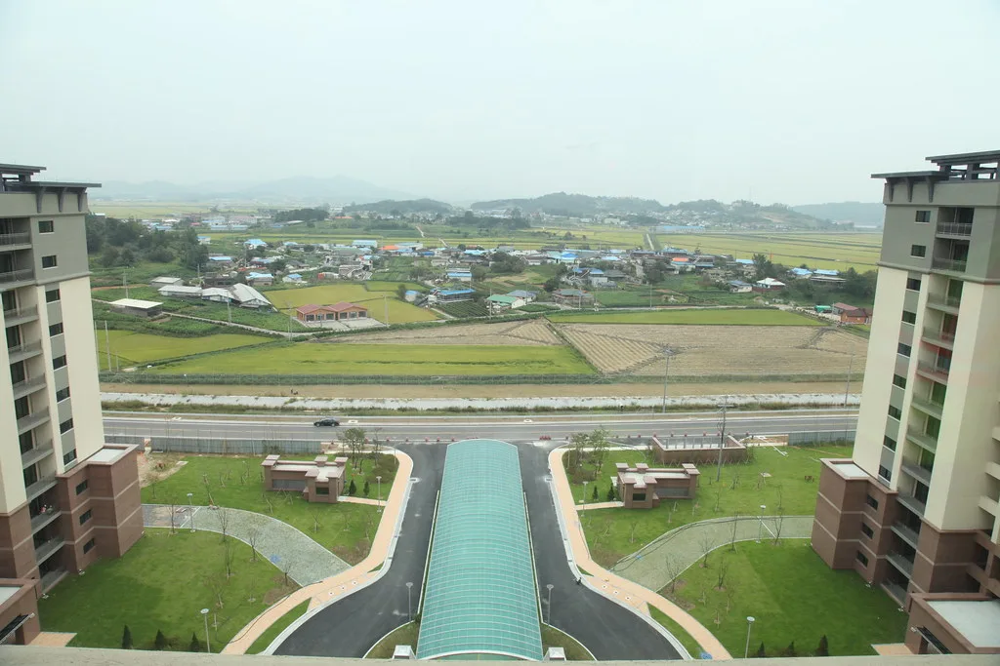

이재명 대통령 아파트 매도 '17억 근저당' 논란
이재명 대통령이 30년 가까이 보유해온 경기 성남시 분당구 양지마을 아파트를 29억 원에 매도하면서 매수인 앞으로 17억 7000만 원의 근저당권을 설정한 사실이 등기부등본을 통해 확인되며 논란이 일고 있다. 해당 아파트는 지난 16일 소유권 이전 등기가 마무리됐으며, 매도 대금 대부분에 해당하는 금액이 근저당 형태로 남아 있다는 점이 뒤늦게 알려지면서 정치권의 관심이 쏠렸다. 이 대통령이 정치에 입문하기 훨씬 전부터 보유해온 주택이라는 점에서, 그동안 개인 자산 내역이 크게 주목받은 적은 없었다.
안철수 국민의힘 의원은 이를 두고 초고가 주택 거래에서 종종 활용되는 '셀러 파이낸싱', 즉 매도자가 매수인에게 사실상 자금을 빌려주는 방식이라고 지적했다. 안 의원은 일반 국민에게는 강도 높은 주택담보대출 규제를 적용하면서, 대통령 자신은 사적인 방식으로 자금을 융통해준 셈이라며 형평성 문제를 제기했다. 안 의원은 등기부등본 내용을 근거로 문제를 제기하며, 대통령의 해명을 요구하는 논평을 잇달아 내고 있다.

이번 논란의 배경에는 현행 대출 규제가 자리한다. 25억 원을 초과하는 주택의 경우 주택담보대출 한도가 2억 원으로 제한돼 있어, 고가 아파트를 매수하려는 사람들은 자금 조달에 어려움을 겪는 경우가 많다. 이런 상황에서 매도자가 근저당을 설정해주는 방식은 매수자의 자금 부담을 실질적으로 덜어주는 우회 수단으로 작용할 수 있다는 지적이 나온다. 시중 은행 대출로는 필요한 금액을 마련하기 어려운 매수인이, 매도자와의 사적 약정을 통해 잔금을 나눠 치르는 구조를 택했을 가능성이 거론된다.
다른 한편에서는 이 아파트가 재건축을 추진 중인 단지라는 점에서, 근저당 설정이 이른바 '물딱지'를 막기 위한 조치라는 해석도 제기된다. 재건축 사업 진행 중 조합원 지위가 제한되는 시점 이후 매도가 이뤄지면 매수인이 새 아파트 입주권을 받지 못하는 사례가 있어, 이를 방지하려는 실무적 장치였을 수 있다는 분석이다. 이런 방식은 재건축 예정 단지의 거래에서 매도자와 매수자 양측의 위험을 줄이기 위해 종종 활용돼온 것으로 알려져 있다.

야당은 대통령이 평소 실수요자 보호를 내세우며 부동산 대출 규제를 강조해온 것과 배치되는 행보라며 비판 수위를 높이고 있다. 국민의힘은 이번 사안을 두고 대출 규제로 어려움을 겪는 국민과, 규제를 우회할 수 있는 대통령의 처지가 극명하게 대비된다며 공세를 이어가고 있다. 반면 여권 일각에서는 개인 간 부동산 거래에서 흔히 쓰이는 방식일 뿐이라며 정치 공세에 선을 그었다. 대통령실은 근저당권 설정 경위에 대해 매수자 측 사정에 따른 것이라는 원론적 입장만 밝힌 상태다.
정치권 안팎에서는 대통령의 사적 자산 거래가 정책 신뢰도에까지 영향을 미칠 수 있다는 점에서 이번 논란을 가볍게 볼 사안이 아니라는 목소리도 나온다. 특히 부동산 대출 규제가 서민 실수요자를 겨냥한 정책으로 소개돼온 만큼, 이번 사례가 정책 취지와 어긋나 보인다는 인식이 확산될 경우 여론에 미칠 파장도 작지 않을 것으로 보인다.
이번 사안은 대통령의 사적 자산 거래가 공적 정책 기조와 어떻게 맞물려 해석되는지를 보여주는 사례로 평가된다. 구체적인 근저당 설정 배경이 명확히 공개되지 않은 만큼, 정치권의 공방과 함께 추가 설명을 요구하는 목소리는 당분간 이어질 전망이다.